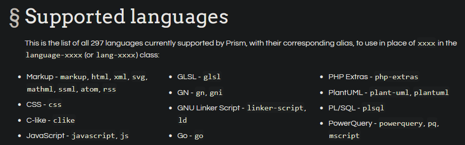

La etiqueta pre indica a los navegadores que tienen que respestar los saltos de línea, espacios, etc. Además por defecto muestra un tipo de texto monoespaciado, que es el que se suele utilizar en programación.
Normalmente dentro se pone la etiqueta code, que no tiene una función específica, pero se suele utilizar para añadir clases que formatén el texto que suelen venir en librerías de Javascript.
Librerías de resaltado de sintaxis
A partir de ahora utilizaré la librería de Prism, la cual puedes descargar o utilizar online
Modo online hay que añadir las siguientes líneas de código en el documento HTML
<!DOCTYPE html>
<html>
<head>
...
<link href="https://{{cdn}}/prismjs@v1.x/themes/prism.css" rel="stylesheet" />
</head>
<body>
...
<script src="https://{{cdn}}/prismjs@v1.x/components/prism-core.min.js"></script>
<script src="https://{{cdn}}/prismjs@v1.x/plugins/autoloader/prism-autoloader.min.js"></script>
</body>
</html>
Si se quiere tener los archivos a ejecutar, se puede descargar:
<code class="language-HTML">Texto HTML resaltado</code>
La página de Prism indica que la clase es languague-xxxx, donde XXXX es el lenguaje y nos dice como nombrarlos. Por ejemplo: html, css, javascript o js.
Artículos leidos para saber donde posicionar la etiqueta script